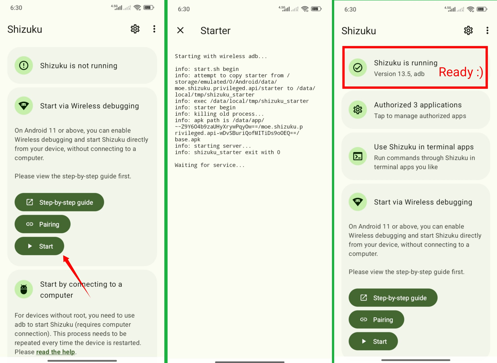

zFont3 对比评测：它可能是安卓上覆盖面最广的系统字体工具
用过三四款安卓字体替换工具后，zFont3 在多品牌兼容性、文件接入灵活性和分机型精细处理上确实做得更到位，但配置门槛也摆在那儿。
定位：这个类目里它排什么位置
Android 系统字体替换这个领域，长期以来的格局是「大厂方案覆盖少数机型、小众工具各有各的领地」。系统自带的主题商店只卖主题不卖字体，大厂方案（比如 Samsung 的 Good Lock）只覆盖自家旗舰，而那些面向全品牌的第三方工具，要么只支持老 Android 版本、要么厂商一改主题引擎就集体失效。
zFont3 是个例外——它几乎把 Android 字体替换这个细分赛道的所有问题都踩过一遍并且给出了答案。从 Android 10 到 16，从 Samsung OneUI 到小米 HyperOS、vivo OriginOS、OPPO ColorOS，甚至 HarmonyOS 机型，它都有对应方案。不是说它没有替代者，而是你很难找到另一款能在这么宽的时间跨度和品牌矩阵里保持稳定更新、并且还在持续追新版本兼容性的工具——去zFont3官网看一下支持列表就明白为什么它能活下来。

它的差异化：别人没做或做得不够的地方
四种文件接入方式，覆盖 Android 权限演变史
Android 的存储权限策略在历史上有过三次大改，每次都直接影响第三方工具能不能往系统主题目录写文件。大多数字体工具只押注其中一种方式——要么只做 SAF（Storage Access Framework），要么只做 Root——但 zFont3 把四种方式都做了进去：Legacy 对应 Android 10 及以前的传统文件访问、SAF 对应 Android 11-12 的系统授权方式、Shizuku 对应当前主流 Android 13+ 的 shell 级权限方案、Root 作为全版本兜底。
好处是明显的：SAF 在 Android 13+ 上已经被不少厂商直接禁用，Legacy 在新系统上拿不到权限，但 Shizuku 凭借 ADB 或无线调试拿到 shell 级权限，目前是唯一能在所有品牌、所有系统版本上稳定工作的方式。zFont3 不押注，用户可以从最低难度的方式开始试，不通了直接切另一种，不用卸载重装。
分机型的精细处理，不搞一刀切
很多同类工具的文档写得笼统："vivo 用户请降级主题 App"——降级到什么版本？哪个版本开始屏蔽？Android 13+ 降级脚本还能跑吗？zFont3 的处理方式不一样，它针对每个品牌甚至具体机型都有独立的处理路径。vivo 和 iQOO 是 Android 上对自定义字体限制最严格的品牌之一，主题 App 升到 7.0 后完全封锁了自定义主题目录，传统方法全部失效。zFont3 没有停在"不行"两个字上，而是利用 vivo 自带文件管理器的系统级权限开发了一套绕过法：降级文件管理器到 6.8.3.2、开启隐藏文件、然后由脚本在文件管理器里执行注入——这整套流程的步骤号、版本号、已测试机型（vivo V27E Android 13-15 全部覆盖）都列得清清楚楚，有任何疑问随时去zFont3文档查分机型指南。
这种精细不是只对 vivo。Samsung OneUI 8 的 Exclusive Fonts 兼容性问题、小米字体选择器的崩溃、HyperOS 机型的字体应用逻辑……zFont3 的版本迭代记录里能看到，它在追的不是"大版本兼容"，而是每个品牌的每个小版本变化。
版本迭代的速度和跨度
翻一下 zFont3 的版本历史，2024 年到 2026 年两年间从 3.4.x 一路迭代到 3.9.2.2，中间跨了 Android 14、15、16 三代系统。每次大版本升级后，zFont3 都是最快跟进的第三方字体工具之一——Android 13 SAF 大面积失效的时候，它及时引入了 Shizuku 作为推荐方案；HarmonyOS 机型出来后它直接加了支持；Samsung OneUI 8 刚发布半年多，3.9.2.2 版本就已经修好了 Exclusive Fonts 的兼容性问题。

它的取舍：为这些优势付出了什么
配置门槛不低，尤其对小白用户
安装包从官方下载拿之后，四种文件接入方式里，目前推荐的 Shizuku 方式需要开发者选项开启、无线调试配对或者 ADB 连接电脑——整套流程对没有接触过 Android 调试的用户来说不算轻松。Legacy 方式零门槛但 Android 10 以上不能用，SAF 低门槛但 Android 13+ 大面积失效，Root 最方便但需要先解锁 Bootloader 刷 Magisk。等于说在当前主流 Android 版本上，想稳定用 zFont3 换字体，要么有一定动手能力，要么已经是 Root 用户。
这不是 zFont3 的问题——Android 系统本身就不欢迎第三方换字体，厂商还在不断加码限制。但作为用户，你得清楚：选 zFont3 意味着愿意花 5 到 10 分钟配置一次 Shizuku，之后才能享受一键换字体的便利。
部分品牌的极端限制仍需手动介入
即使 zFont3 做了绕过，vivo Android 13+ 这类机型的字体应用过程仍然比其他品牌复杂——需要在文件管理器里开启隐藏文件、手动确认注入脚本执行、有时还要手动打开主题商店触发刷新。Samsung 应用后可能需要手动切一下 Galaxy Themes，OPPO Android 10+ 要确认系统区域切到缅甸。这些不是 bug，是厂商主题引擎的设计就是这样，zFont3 能帮你走完流程但没法替你绕过每个品牌的最后一道关卡。
选购结论
如果你想在 Android 上换系统字体，而且不想被某个厂商的主题引擎卡死，zFont3 基本是目前覆盖面最广、更新最勤的选择。它的优势在于：不需要 Root 就能在绝大多数主流机型上工作（配置好 Shizuku 就行）、支持的品牌和系统版本跨度最大、对每个品牌的特殊情况都有对应的处理路径。
但它不是对所有人都是最优解。如果你用的是 Samsung 旗舰、只在 Good Lock 里换字体那很简单；如果你用的是原生 Android、系统自带的字体选择器就够用；如果你完全不想碰开发者选项和 ADB、那就得接受 SAF 在很多机型上失效的现实。
一句话：想换字体但找不到一款能在你手机上稳定工作的工具？先试试 zFont3。配置好 Shizuku，从字体库里挑一个喜欢的，点 Apply，重启之后整个系统界面就换了。对于折腾党来说，这个代价和收获是对等的。